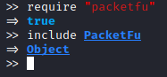
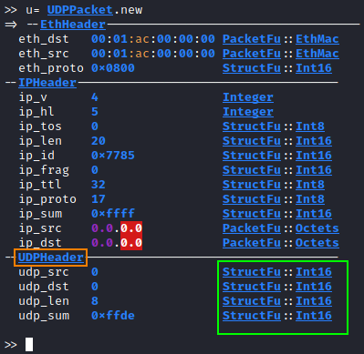
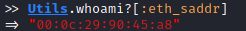
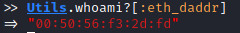
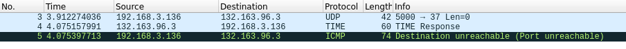
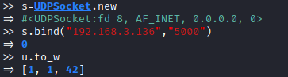
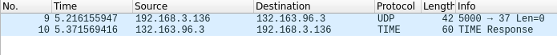
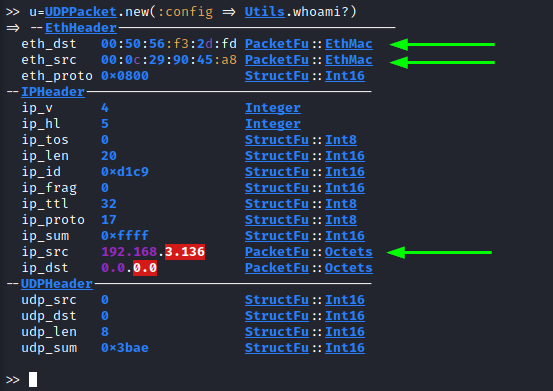

Forge UDP packet
UDPPacket class
(
https://github.com/todb/packetfu/blob/master/lib/packetfu/protos/udp.rb)
require "packetfu"
include PacketFu

Check the
documentation to know how to set these values:
• ETHHeader:
https://www.rubydoc.info/github/todb/packetfu/PacketFu/EthHeader•
IPHeader:
https://www.rubydoc.info/github/todb/packetfu/PacketFu/IPHeader•
UDPHeader:
https://www.rubydoc.info/github/todb/packetfu/PacketFu/UDPHeaderHow
send an UDP packetTo send an UDP packet you need to set the following fields:
◇ eth_saddr →
source MAC address
▪ Check Utils.whoami?[:eth_saddr]
 ◇ eth_daddr → destination MAC address
▪ destination outside our
local network → MAC address of the default gateway
- Check Utils.whoami?[:eth_daddr]
 ▪ destination inside of the local network → MAC
address of the destination
- Utils.arp("[IP_Address_destination]")
◇ ip_daddr →
destination address
◇ ip_saddr → source address
◇ udp_src → source UDP port
◇ udp_dst →
destination UDP port
u= UDPPacket.new
u.eth_saddr="00:0c:29:90:45:a8" #source MAC address
u.eth_daddr="00:50:56:f3:2d:fd" #destination MAC address
u.ip_saddr="192.168.3.136" #ip source address
u.ip_daddr= "132.163.96.3" #ip destination address
u.udp_src=5000 #source UDP port
u.udp_dst=37 #destination UDP port
u.recalc #use first always recalc, in order to calculate the
# checksum of the modified packet
u.to_w #To send the packet
Why our machine sent
back a ICMP packet?We sent the packet directly to the network without going through the kernel
TCP/IP stack.
Because we are using raw sockets, in our kernel,
we do
not have a real socket (bound to UDP source port) that is waiting for an UDP time responseSolution: to avoid the ICMP kernel response, we need to create an UDP
socket which binds itself to our source port.
s=UDPSocket.new
s.bind("192.168.3.136","5000")
u.to_w
 Fast Way: The parameters below
can be set automatically (no spoofing)WARNING if the destination is in
the local network: this method will set the
destination MAC
address(eth_daddr/eth_dst) at the default gateway, but if the target is inside the local network, we need
to set directly the MAC address of the target and not of the default gateway.
• eth_saddr →
source MAC address
• eth_daddr → destination MAC address
• ip_saddr → ip source address
with this
command:
u=UDPPacket.new(:config => Utils.whoami?)
